我太乐观了。
以为十天内可以痊愈。
现在第三个礼拜了。
时间证明我错了。
今年是马年。
塞翁失马，焉知非福。
所以今年只要一倒霉，下一秒就会赚回。
下一秒赚回，后一秒又会很惨。
后一秒很惨，过后就会很幸福。
就这样幸福下去，好么？
因为到时，时间已经来到羊年。
马儿交班了，吃草去了，自由了。
去寻找属于它的下一片天空。
我们十二年后再见。
这一年的 planning 大致是这样。
一进入马年就咳个不停，中间陆续跌宕起伏。
但是收尾的时候，一定会像马尾妹那样美美的厚。
悬崖勒马，回头是岸。
凡事留一线，日后好相见。
还有几个月才到羊年呢？
让我先数个绵羊，一只、两只、三只 ...
咳咳咳 ...
该死的，刚才数到第几只了？
没错是草泥马的七一八一。
什么？大声点，重复一遍。
你不会不知道，羊也是吃草的对吧？
还可以拿来煮羊肉咖喱，再不就是羊肉烧烤。
种种料理，就是要你 Hey you, Mr Q, 一起 barbecue.
说得没错，这就是乐观与悲观的差别。
我的火星朋友告诉我：
I would encourage everyone to be optimistic and excited about the future.
And generally, I think for quality of life, it is actually better to err ...
on the side of being an optimist and wrong ...
rather than a pessimist and right.
我想，我英文真的不好，还以为 err 是呃 ... 是一种犹豫。
生活已经那么苦，做人还要那么悲观么？
怎么说呢？Err ... 这次的呃是犹豫。
所以直接被 double kill 干掉。
从此，Err ... or 404: Page not found.
看你下次还敢呃呃声么？
打开油管，我只想听歌。
我没有你想象中那么坚强，我只是擅长用微笑去伪装。
春天花会开，风吹落满地。
蹲下身子，单膝跪地，缓缓伸出手拾取一朵雏菊。
那不是脚软，也不是求婚，而是一种仪式感。
扬眉吐气？羊没吐气？扬眉吐气！
花瓣不会说谎。
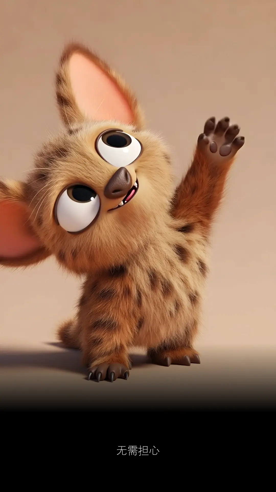
给你两个选择，只能选一个。
跑步或拉筋？
我选择跑步，完全不拉筋。
然后我不明白。
为什么平时都在跑，却越跑越退步，退到如此离谱。
脚步打不开，打不开就跑得不够尽兴。
Something's not right.
有种被限制的感觉。
十八岁乘二都要来了。
这个不可以，那个不可以。
感觉很不对。
不对不要紧，要紧的是不知道不对在哪里？
这才是沉重的代价，隐形的成本。
有些事情，你本可以，但因为无知，所以错失。
让人惋惜，实在可惜。
生病这期间，我选择不跑步，但有持续在拉筋。
睡醒拉、洗澡拉、坐着拉、站着拉、有空就拉。
慢慢地，终于又可以把手掌放到脚底。
那感觉真爽。
身体的自由感，就是年轻的滋味。
去年完全不能，手还没伸到脚底，已经疼到半条命。
忽然记起，以前天天跑步的时候，跑完步一定会拉筋。
然而这几年，懒惰了，不再拉筋，直接忽略掉。
以为拉筋这环节最不重要。
现在看回去，这是最错的想法。当初却如鬼遮眼。
一件事情，如果开头做对了，可能只是碰巧明白。
如果途中，你犯错了，能找出原因，那才是真正的了解。
了解和明白，表面看起来都是懂。
海水退了潮，才知道谁在裸泳。
我看过张学友演唱会两次。
两次他都表演了一字马。
新年的时候，侄女也很轻松地在我面前展开她的一字马。
他们都不开口，直接用行动。
一个动作，干净利落。
就像呼吸、眨眼睛，那般轻而易举。
仿佛就在暗示我一定要马上拉筋。
塞翁失马，焉知非福。
这次生病生到好，好到不得了。
失去了一些，但也获得了不少。
无需担心
过好眼前就是了。
不管是好是坏。
最后一定是好。
如果不好，那就还没到最后。
后来，我们什么都有了，却没有了我们。
这不是最后。
最后一定是好的。
好到遗憾无法打扰。
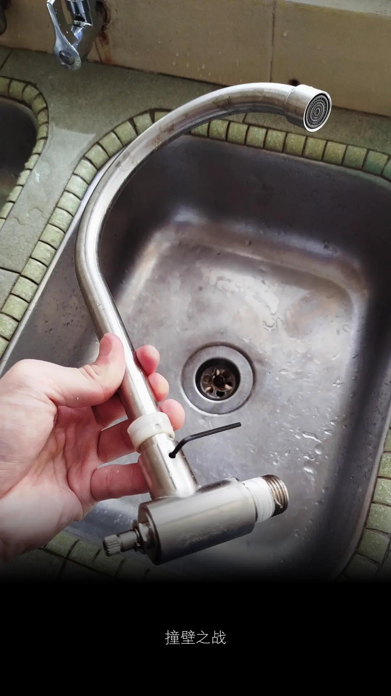
换个水龙头，还需要用到 Allen key，什么操作？
曹操都杀到来了，我还在研究这水龙头该怎么打开。
阎罗王都见了九次，老人家都快绝望了。
九次都是因为不懂得怎么拆开这隐藏的水龙头螺丝。
然后次次被曹操干掉。
被干掉的那刻，游戏重新开始。
就知道水喉师傅不容易做。
那些电影又做到好像很容易，连女主人都爱上他们。
真心怀疑他们在演戏，不必怀疑，他们就是在演戏。
我不讨厌硬件，但我抗拒它们。
人天生就会有一些东西是自己不喜欢的。
不是对方的问题。
而是本身就算不讨厌，也无法爱上。
因为不懂得拆，更不懂得斗回去。
斗牛要不要？不要！一万个不要。
一个想不通，一个想不开。
怎么还会有故事？
怎么还会爱上？
怎么还会有剧情发展？
导演烂，不代表剧本不够好。
演员，跑龙套也可以很专业。
这玩意儿本来是要等屋主来做的。
就看谁先忍不住。
我的耐心，自认比天高比地厚。
但是屋主去了尼泊尔当外劳。
两个礼拜后才回来。
她说五楼的耐心，毕竟还是不够高。
她正在前往 EBC 路上，寻找天山雪莲。
家里有什么事，自己搞定。
不一样层次的打击，就叫降维打击。
厨房那滴水声，听到我不行。
本来的节奏，是普通心跳声，滴 、滴、滴 ...
昨晚开始，节奏都没有了，直接长滴一声。
呜呼哀哉。
天长地久有时尽，此声绵绵无绝期。
环境所逼，人到绝处逢生。
天生我才必有用，一直不知怎么用。
到最后，逼不得已，还是要自己来。
然后，你会发挥惊人的潜力。
终于，曹操最著名的失败 — 赤壁之战。
草船借箭，火烧连环船。
船到桥头自然直，车到山头必有路。
路始终是人走出来的。
阿妈，我得咗啦！
我可以去拍电影了。
先去日本还是香港好呢？
两者没有冲突，熊掌和鱼我都要。
官人，我也要 ~
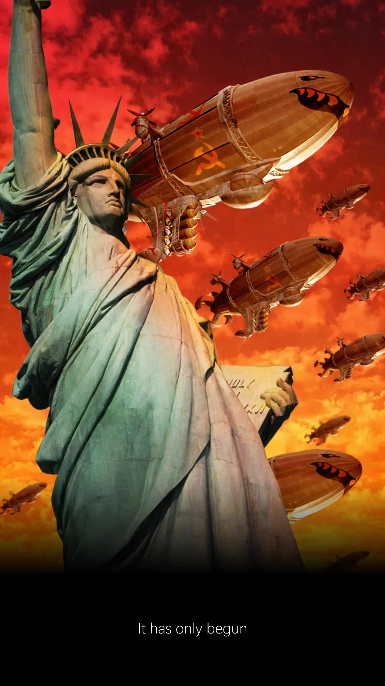
我不是周杰伦的粉丝。
以前都很少听他的歌。
这次他出新专辑。
第一首主打就是摇滚风格。
没听之前，我觉得我不会喜欢摇滚歌。
但偏偏，雨渐渐 ...
他的这首摇滚曲风，有着我中学记忆。
不是因为读书时期我喜欢他的歌。
而是在那段年轻岁月，我玩上瘾的电脑游戏。
当时除了宇峻科技出版的《绝代双骄》一、二、三部曲，
就是《Red Alert 2》有资格让我沉迷、到废寝忘食。
当然还有一些小咖 ...
The typing of the dead, ManX TT superbike ...
这些就不提了，枭熊不提当年勇。
主要是前面的那两个游戏，故事情节太诱人。
真的是能够从天亮打到天黑，再打到天亮。
只会越玩越爽，玩到不用读书、不会饿、不想睡。
整个人好似中了毒，不玩反而不舒服。
最后，某一个凌晨，给爸爸骂！
我自知惭愧，道：爸，再给我一首歌的时间。
不给我就拉倒，反正我只听妈妈的话。
爸爸的话不是东风破，那就当耳边风。
哎哟，不错哦，这个给爸爸听到会被屌哦！
《太阳之子》根本就是填了词的 Red Alert 2 主题曲
那是一场关于战争的游戏。
一场战争，可以打很久。
关键不是你获得胜利，而是你如何获取胜利？以什么代价？
最快的时间，最少的伤亡，最有效的战略。
现在的世界，是那场游戏里的战争。
这首歌的 MV 也在叙述着善与恶之间的斗争。
一首歌只要能带你回到过去。
不管他人评语如何，那已是最伟大的作品。
回忆来得太快，就像龙卷风。
风卷起了叶子。
多年后，时间离我千里之外。
我双鬓斑白、发如雪。
周杰伦的歌就像枫叶。
只会随着时间越来越红。
每个人爱上的理由都不一样。
同一种旋律，有些人听不懂。
更不明白一首歌，为何能让人如此痴迷？
因为你听到的只是歌，他听到的是 ...
园游会的故事、
牛仔很忙的借口、
青春期的开不了口、
十五岁的黑色毛衣、
十七岁的彩虹、
我不配的黑色幽默 ...
这一切的一切，一言难尽。
从今天说到十一月的萧邦，也道不完。
那是听歌人记忆隧道里，
属于他自己一部最长的电影。
片名《不能说的秘密》。
既然不能说，唯有保持安静。
但我还是想说：我会学着放弃你。
是因为我 ... 是因为我 ... 是因为我 ...
有大舌头。
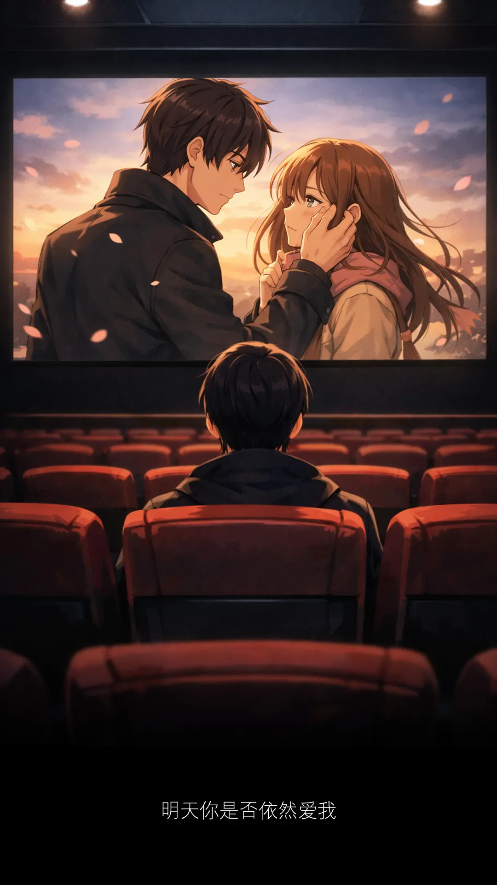
We live and die in the shadows, for those we hold close, and for those we never meet.

两年后，我不再是 INFJ-A

如果有一天我结婚了，但对方不是华人。
会有那么一天么？我从来就没想过。
但我知道表哥的女儿最近结婚了，她嫁给一个印度人。
这个我倒没想到。
世上没有绝对，尤其感情这回事。
是你的逃也逃不掉。
不是你的，从天上掉下来的仙女，你也得不到。
人与人之间，存在一种微妙感觉。
配合时间的酝酿，它让我们学会拥抱这世界。
让我们知道，这世界不只是一种颜色。
谁说不能黑白配？世界上没有什么事，能够如此的绝对。
白衬衫配黑裤子，我觉得很好看。
你要相信，相信我们会像童话故事里，幸福和快乐是结局。
这样的结局，不只属于光良，是属于还相信爱情的每一位。
你相信爱情么？
嘘，不必告诉我。讲出来会不灵，自己知道就好。
现在是春天，你看你，又再发春天的梦。
春天的梦，总让人动容。
这是出席一场婚礼后的有感而发。
那是一场印度人的婚礼。
我好久没参加印度人的婚礼了。
小时候，常常有这机会。
长大以后，才明白，有些机会，只留在小时候。
小时候的自己，又怎么懂得要珍惜？
如果早就懂得珍惜，那不叫小时候，那已是百年以后。
本以为这场婚礼会在印度庙，用香蕉叶赤手吃咖喱饭。
我好想念那个味道。
但是没有，他们走的是摩登路线。
好像华人，甚至比华人更华人。
因为他们还邀请了舞狮表演！
新年我都没看过舞狮。
这场婚礼，舞狮就在眼前。
还摆了个春联，祝贺新郎新娘百年好合、永浴爱河。
春宵一刻值千金，花有清香月有阴。
今晚话不多说，待婚礼结束后，直接来个鸳鸯浴。
让你欲仙欲死，余生的幸福全靠你了。
不久，我们座位，来了一位印度妹。
是新娘最小的妹妹。
这印度妹，小时候住在我们 kampung 家对面。
那时候她常跑来我们家，透过玻璃窗口跟我爸说印度话。
十多年前，他们举家搬去蒲种。
我对她的记忆，一直停留在鬼灵精小丫头模样。
Tang ge chi, ni rombeh ranggi.
小丫头在这里，不给糖果就捣蛋。
今天她姐姐结婚。
她还记得邀请我们，叫我们一定要赴约。
十多年没见过她了。
女大十八变，变得好漂亮。
她再也不是小妹妹，而是一个亭亭玉立的女人。
印象中，中学根本没遇见她，才知道她小我六岁。
我离开中学，她才进 form one.
目前单身，还没结婚，不想结婚。
她说她爱钱，男朋友不重要。
问她为什么不结婚？
她用印度话跟我爸说她要嫁给华人，指名道姓要嫁给我。
平时我和爸爸都没什么话聊，她竟在我爸妈面前撩我。
她与我们的邻居关系显然不会差。
甚至可以说是肝胆相照。
什么香皂？肝胆相照！
讲了你也不知道，我只是想拍个照。
来，多么难得大家聚在一起，笑一个吧！
功成名就不是目的。
让自己快乐快乐，这才叫做意义。
我负责拍照，你负责微笑。咔嚓！
我爸展颜欢笑。
我妈笑得合不拢嘴。
印度妹一笑倾城。
我无言以对、沉默是金。
她说她喜欢钱。
我没钱，金子就很多。
大概在一点五亿到两个亿之间。
她让我想起一个人。
我以为那只是虚构的角色。
我终于明白古龙笔下的苏樱。
在《绝代双骄》最后嫁给小鱼儿的那个女主角。
现实版中的她是谁了？
她就是我眼前的这个印度妹。
她们的性格如此相似。
原来，真有此人。
可惜，我不是小鱼儿。
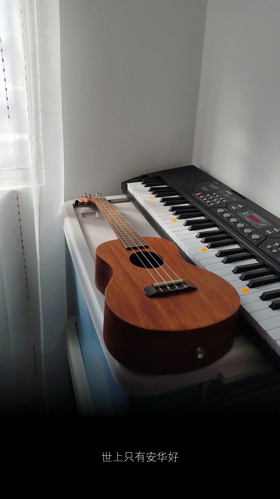
键盘被冷落了好久。
要怎么找回熟悉的旋律？
左看右看再看看。
它根本就是龙珠的化身。
今天是华哥给的额外特假。
先来一首不知道还记得吗？
世上只有安华好，有华的日子像个宝 ...
不出意外的话，很快就会出意外。
我竟然忘记了，太久没有弹了啦。
好在有谱。
菩萨观音，观音菩萨，保佑保佑。
绝世武功才得以传承。
Heng 啊！Ong 啊！Huat 啊！
终于弄明白那个次序。
才发现这一首华哥主题曲，我多数逗留在第六颗龙珠。
第五颗偶尔会弹到，第七颗只弹到一下。
C（Do）、D（Re）、E（Mi）、F（Fa）、G（Sol）、A（La）、B（Si）
一、二、三、四、五、六、七
七个音组成一粒龙珠。
88 键上，你会看到七颗龙珠。
中央 C 永远是第四颗龙珠的开端。
这个 analogy 最实用。
不愧是从美国中央情报局 CIA 得来的消息。
键盘啊键盘，不如我们重新来过？
过门都是客，客人来，看爸爸，爸爸不在家。
这一首又怎么弹去了？
想问爸爸，爸爸却不在家。
我的妈呀，爸爸去哪儿了？
还是妈妈比较好。
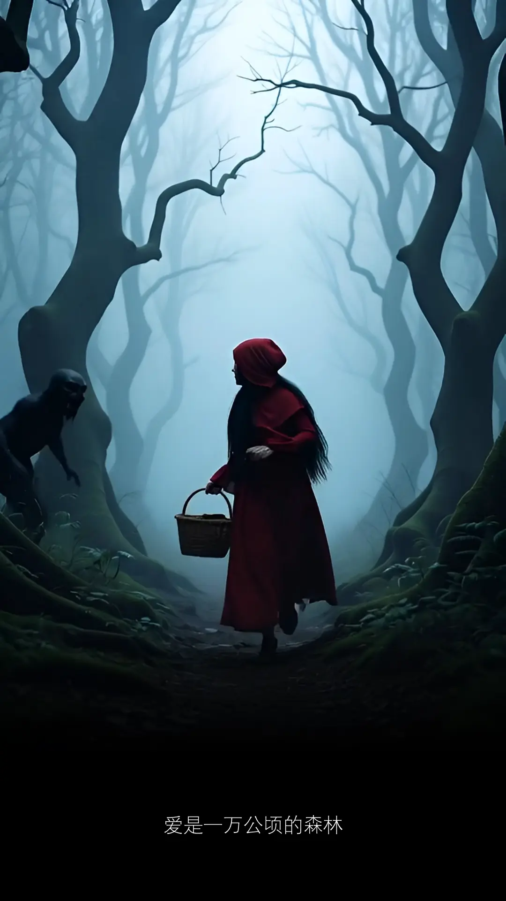
前段急促，不够优雅。
后段犹豫，节奏已乱。
旋律几乎跟不上，手指来不及布局。
旁人听得出，此人心神不宁。
精神恍惚、心血不足、神经衰弱、功夫不佳。
心中存有悬念，拿不起，更放不下。
这种心态，敌人面前，必死无疑。
但胜在临危不乱。
不完美，但至少前奏是完整的。
先完成，再完美。
更何况完美是个骗人的词汇。
弹指之间，还得练个三年五载。
要快的话，去柬埔寨，卖猪仔。
来来来，手快有，手慢没，买定离手。
命运，要不自己主宰，要不自己就是猪仔。
怎么确认，自己是不是猪仔？
唯有透过练习。
不断地练习。
一直练习。
我已开始练习，开始慢慢着急，着急这世界没有你。
连歌词都充满了着急，又怎能在短时间内，学会放下？
只要一天放不下，永远也走不远。
无情却有情，情到浓时情转薄，是无情？是有情？
又有谁分得清？又有谁不计前嫌？
多情自古空余恨，你这又是何苦？又是何苦？
遇到了难题，不知道怎么解决？
去附近的 NSK 买两条苦瓜回来。
吃得苦中苦，方为人上人。
前方三条路。
当然是选最容易、最熟悉、闭着眼睛都会走的那条。
其它两条因为非常少用，所以 ...
Dua tai chi liao, wa langsung beh hiao.
Tapi 只要你会一条，最后都可以到。
又何必执着于，学不会的那两条。
条条道路通罗马，有人出生就在罗马。
世界本来就不公平，不公平是它的默认值。
如果想要到达明天，现在就要启程。
Start Today.
Not Monday.
Today.
Tapi ...
又 tapi？
Today is Monday.
那就对了，你就是猪仔。
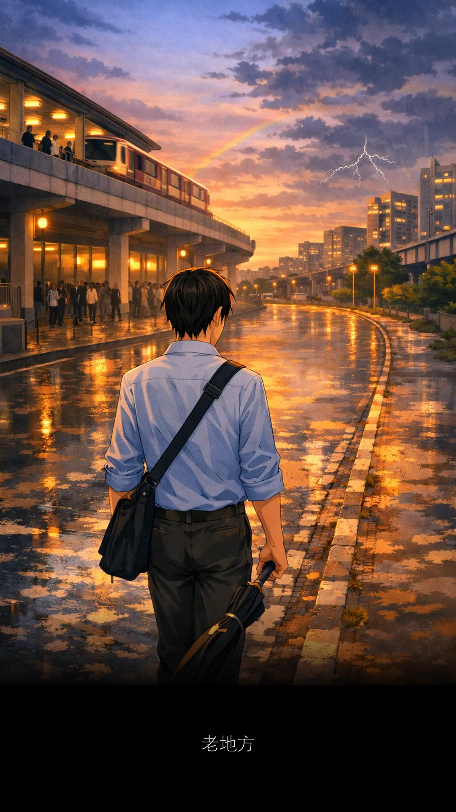
放工前，来了个 heavy thunderstorm.
大雨下得乱七八糟，到处都是闪电雷声。
六点钟，踏出办公室，天空开始放晴变毛毛雨。
LRT 来到 Subang Jaya 站。
广播响起沙沙声，播报员开始 testing 123.
不是为了要替我们挡风遮雨，
而是告知由于天气恶劣导致系统故障。
所有乘客必须在此下站，转搭 shuttle bus.
我听不清楚 shuttle 是去哪里？
又不知道在哪里搭 shuttle？
唯有跟着人潮走，跟着人潮排队。
但是心里觉得不对。
这人潮排什么队？
我非得也要跟着一起排么？
想到这里，没有犹豫，掉头就走。
我的选择是走路回家。
这是多么难得的机会。
现在唯有逼不得已，我才有借口说服自己走一下路。
这段路并不遥远，是曾经熟悉的风景。
我有多少年没从这一站走回家。
至少五年了。
我以为变化会很大，和以前相比的确是。
以前这条路没什么车子驶过，道路很宽，跑步很爽。
现在道路两旁，甚至人行道，满是违规停泊的车子。
很煞风景，有压迫感，走在这里，有些抑郁。
起着的办公楼已经盖好，上班族也已经在这里打卡。
LRT 3 早就建好一段日子，但是一拖再拖。
直到现在，都还没正式开放给大众。
当记忆被唤起，心中难免会感慨。
那是回不去的日子，只会越走越远。
远到有一天，只怕自己也会忘了。
如果没有当初的回忆，哪会有现在看回去的美丽？
那段年少的故事，是一出难忘的戏。
在意想不到的时候，瞬间触动你的心。
回到家，雨停了，伞也干了。
我满身湿透却很开心。
更开心的是，姐姐打包了肉骨茶。
有我的份！
上辈子肯定是拯救了猪八戒。
加分的快乐，如此简单。
三月份，最后一天，我选择了自己的路。
而那条路用记忆回馈了我。
那些回不去的日子，其实并没有真正走远。
它们只是换了一种方式存在着。
藏在一段广播的杂音里，
藏在被车辆占用人行道的某个转角，
藏在你不经意抬头看见的闪电余光中。
你以为快要忘记的东西，身体和心都替你记得。
人生大概就是这样吧。
我把文章发给 DeepSeek.
DeepSeek 读了有感而发：
回忆从来不活在相册或纪念日里，
而是寄生在日常的缝隙中。
在你最不设防备的时候，
用一阵沙沙声、一个被迫掉头的瞬间，
把你拉回某个版本的自己面前。
原来你已经走到这里，而这条路记得你来时的模样。
那不只是个人的选择，
而是在人群盲目排队的时候，你听见了自己心里的声音。
那条路回馈你的不是风景，是你还记得自己的确认感。
肉骨茶加分，猪八戒作证。
这日子，值得过。
C2
九十九，它还是你的舞台秀。

你没有盖被的么？
没有。
你没有盖被，我拿被给你盖。
我都不想盖被，你还拿被给我盖？
不用紧，下次我拿被给你盖。
我睡觉没有盖被的。
你的被去了哪里？
我以前的被是 sarong 布来的，木了，丢了很久。
这样你没有被，家里还有一个新的 sarong 布我带给你。
Sarong 布要来做么？Labubu 有么？
下次我带一个被给你。
不要不要。我现在都没有盖被了。
家里有很多被，带一个给你。
盖被很多工，不要。
下次回家，我找一个被给你。
今天出了一整天，不累么？
现在十点了么？
九点三个字。
九点三个字还早，十点就要去睡了。
差不多了，快点去睡。
所以，那个被 ...
为什么一张被能讲来讲去不会累？
因为你是我的宝贝。
当有一天。
你找到了你的宝贝，属于自己的宝贝。
你自然就会明白。
当下再累、再疲倦，都变得无所谓。
只要能看到对方，眼神就会发光。
想要找一个话题，但是找不到话题。
只好一直重复。
心想能聊下去有多好。
同时但愿你不会嫌弃。
因为这机会得来不易。
直到进入梦乡。
依然带着微笑。
今夜，没有宝贝。
宝贝长大以后，有了自己的世界。
他们不再想要你陪。
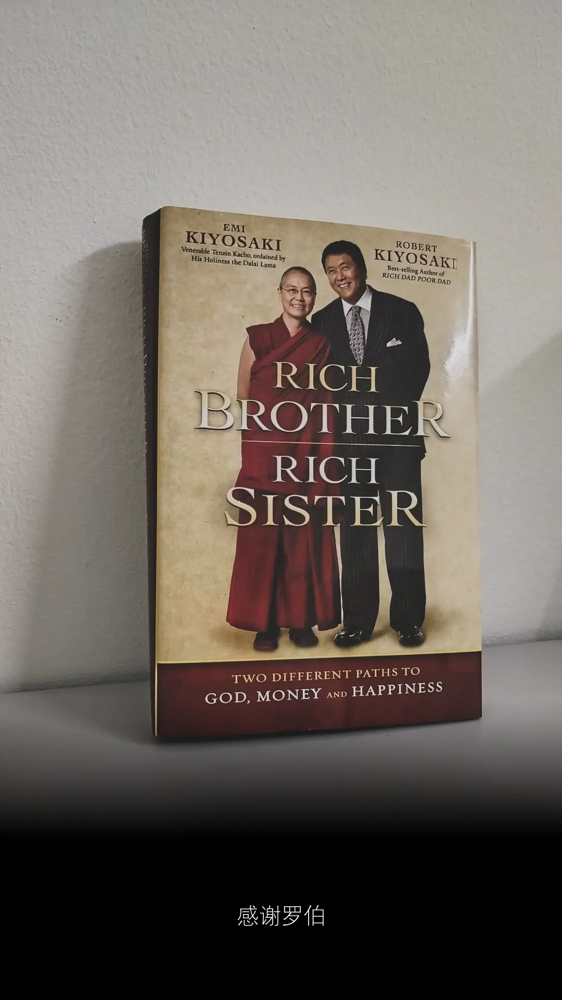
那天，妈妈在我房间。
拿起这本书，看了两眼。
眼神像是在打量封面的造型。
她没有问我那是谁？我也没有告诉她。
妈妈不会以为我要出家了吧？
出去找一个家，然后给她抱孙。
孙悟空受困五指山都要五百年。
唐山藏才出现在他眼前。
缘分这种东西，要时间。
现在我才三十多。
再等一个 470 年就差不多了。
罗伯特·清崎 Robert Kiyosaki
是其中一个让我爱上阅读的作者。
我喜欢他的文字。
我是在 Covid 那段期间认识他。
他影响我太深刻。
还因此为他写了一首改编歌词。
幸好写下的文字，是留下的痕迹。
幸好我还找得到，没有乱丢掉。
谁知道，多年以后，还会用得到。
关于伊朗战争，他每天都在面子书更新。
他曾经参与越南战争。
那场战争，从此改变了他。
I am alive because dead men kept fighting.
特朗普是他的朋友。
和他一起出过两本书。
此刻，罗伯特看着特朗普展开这场伊朗战争。
他肯定是百感交集、感慨万千，更少不了肺腑之言。
伊朗战争，第二十天
《感谢罗伯》
曾经有一本书
它改变了我
它给我带来了很多很多
这本书是这样写的
里头只有
两个主角
富爸爸
穷爸爸
就是这本书
让我找到自我
让我识破金钱的诱惑
让我看穿人生怎么运作
我一直想对你说
谢谢罗伯的书
谢谢罗伯大叔
谢谢你写的每本钱书
谢谢你给我线索
给我振作
谢谢你让我懂得更（很）多
谢谢你
永远陪我们写着书
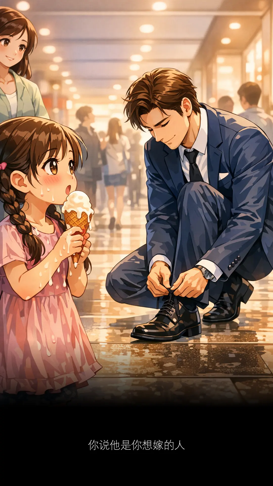
老外系鞋带，画面犹如求婚。
单膝下跪，浪漫、有型。
每个动作，干净利落。
举止潇洒、风度翩翩。
简单蹲下来，系个鞋带而已，都像刘德华。
吃着雪糕的小女孩，也被眼前一幕迷住了。
停下脚步，突然变得不会走路。
她看得目不转睛，像极了爱情。
此后，那个就是她的男神。
情窦初开，喃喃自语：
这个男人，我非他不嫁。
现在只想快快长大。
恨不得时间快点过，好让你娶我过门。
穿着一身西装的男人，皮鞋带子怎么突然松开呢？
又怎么会松在人来人往的走廊边呢？
为什么一个绑着两条长辫子、手上拿着雪糕、
带有一双水汪汪眼睛的小女孩，又刚好会出现呢？
小女孩看到陌生人，妈妈都不跟了。
她停在男人面前，痴痴望着他。
我停在她身后，我也在望着她。
男人低着头，专心系鞋带，没有注意到她。
带我走，到遥远的以后。
妈妈是谁？妈妈在哪里？妈妈不重要了。
看不到妈妈，我也不要妈妈了。
此刻眼里只有老公。我只想跟老公回家。
手中的雪糕融化了，心也跟着溶掉了。
妈妈出现了。
傻孩子，那不是爱情。
那是妈妈的爱情，你休想跟妈妈争。
一个男人，能让妈妈喜欢，同时也能让女儿爱上。
那个男人，大概就长这个模样。
小女孩吃雪糕吃到满嘴肮脏猫。
那是她给男人留下的第一个印象。
我要你喜欢我。
我要连你的女儿都喜欢我。
这怎么可能？
我不信。
直到，那个姓刘，名字叫德华的男人，出现在眼前。
我跟你们说，你们两母女，不用争了。
都不用跟我争了。
人家是说，演唱会门票啦！
到我旁边排队，要个号码吧。
多少号？四号。
除过外套，情节真太俗套。
来按摩的我估不到，曾熟悉的你，这夜叫四号。
四号？不吉利啊！
让我们都叫 3A 吧。
3 个 A cup 的女人。
爱情有时就是一场误会，一场表演。
多年以后，女孩是否会记得 ...
你说他是你想嫁的人
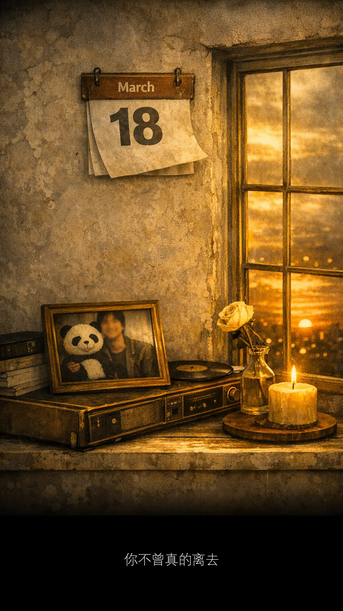
时间久了，真的是会忘了。
今年你记得，明年你记得。
十年后你还记得。
二十年后，你可能就不记得了。
活得越久，要记得的东西越多，才察觉记忆容量有限。
东西太久没用，壁虎在里面生蛋，蛋已经剩下壳。
住在里面的生命早已走远，开始建立另一个家园。
你又懂？我做么不懂？
做人要有自信，不懂装懂，懵懵懂懂。
一辈子可以很长，也可以很短。
懂不懂？我不懂。
我只懂爱你。
那些以前觉得重要的，什么时候，重要到不记得。
不记得就不重要了。
再想起的时候，已经不确定，到底还重不重要？
第一次的 MCO 是在二零二零年三月十八日。
我很记得那个日子，往后每一年都记得。
但是今年，我完全忘了。
它不像 UMobile 会一直提醒我。
账单要 due 了，请付款。
就这样 318 过了好几天，骤然想起。
捶了一下心肝，可那又如何？
若记得，又能证明什么？
只不过自己曾经，很在乎过这么一个日子。
然后日子又会被时间打败，印象不再深刻。
就算那天曾经多么轰动、激动、悲恸、伤痛，
以后没人提起，自己也记不起。
我对时间没概念。
不是准不准时那一方面，而是到了每一年的纪念，
我不会很用心去铭记，所以迟早我都会忘记。
我已经忘了 Billy Panda 什么时候离开。
我只知道它出现过，逗留过，离开过。
再出现的时候，就再也没回来了。
今天是 3A 月份第一天。
人间再现四月天，世间再无张国荣。
这句话还能记得多久？
印象最深刻，是在刚发生的时候，当下的感觉最浓厚。
如果今天咸鱼有点咸，那就先放着吧，等一下再享用。
时间会冲淡一切，原来是真的。
包括对你的思念，是一天又一天，慢慢淡去。
思念会变淡，不等于爱变少。
我懂。我一直都懂。
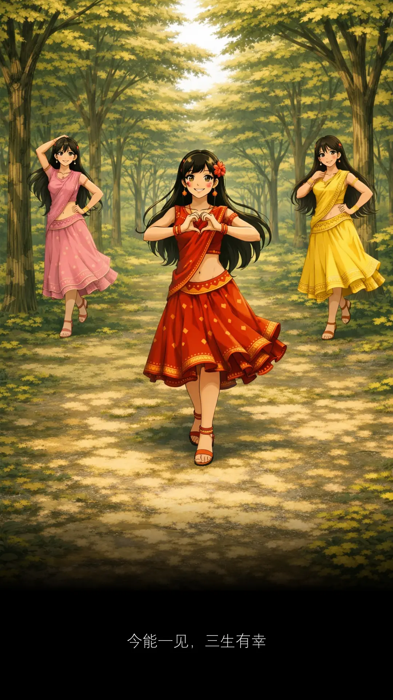
当太阳出现，它就会消失。
因为眼前出现一只 Fresh & White 北极熊。
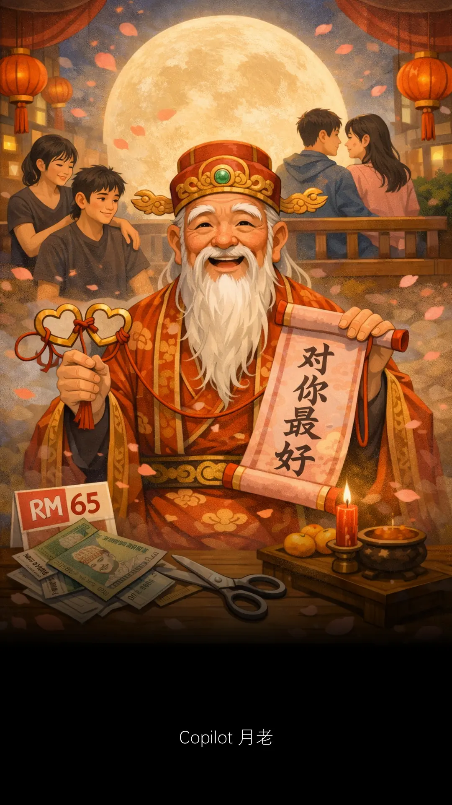
同事剪了个头发，一看就感觉不一样。
平时剪头发，他会找他的发小。
以前不明白什么是发小？
一度以为他头发长了就会开始发 hiao.
原来是青梅竹马的意思。
他和他的发小，感情要好。
好到一个敢剪，一个不怕被剪。
还剪了那么多次。
这份情谊是怎么得来的呢？
故事要从小时候说起。
两个都单身。然后两个都没戏。
好啦。我不愿让你们一个人。
等下去找月老帮你们祈祷。
再播一首月老的歌。
越听越老、白头偕老、爱情不老。
这次的发型，实在不属于发小帮他剪的水准。
它多了一份层次感。
感觉就是，专业和业余比较起来，真的有差别。
华人新年都没见他剪头发。
Raya 要来了就剪个 RM65 的头发。
事情有蹊跷。
说不定他最近和发小冷战。
或许他偷偷收藏了一个马来妹，可能更多。
年轻人精力旺盛，身强力壮，身经百战，越站越勇。
这些我们不知道。
但我知道他已经 potong 了。
Potong 什么？
Potong rambut la bro.
是我想太多。我没有想太多。
你总这样说。我又说了什么？
但你却没有，真的心疼我。有啊！
RM65 剪个头，真的会心疼。
尤其每三星期就得剪一次。
还好，这个价钱我可以剪两次。
多余的五令吉，还可以买张戏票。
等一下，五令吉？
请你站在戏院门口看预告片，好么？
月老有话对你说。
Copilot 月老：
头发总会长长，友情也会生根。
有人陪你剪去三千烦恼丝，有人陪你等到白头。
RM65 的心疼，不过是提醒你 ...
在世间上，最值得珍惜的，不是价钱。
而是那个一直敢剪、一直不怕被剪的人。
年轻人，回去好好思考。
到底在世间上，谁会是对你最好？
对你最好 ~
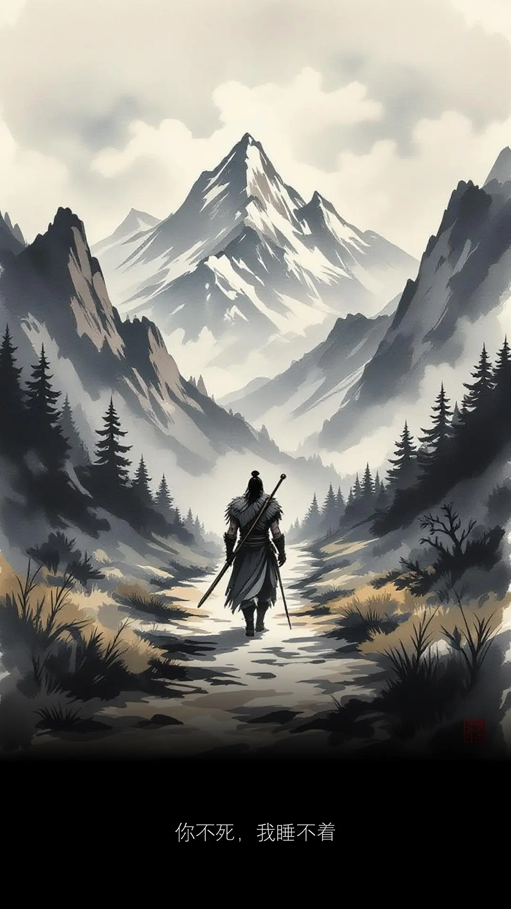
令尊就叫你爸爸。你爸爸的路啊？
斯文点，改口说成：令尊的路啊？
这样杀伤力就会减半，半斤八两。
对方可能还会满脸黑人问号。
令尊？吴尊？
吴尊都做人家爸爸好多年了。
吴尊此刻躺着都中枪。
现在世界不和平，枪林弹雨，炮弹满天飞。
你永远不知道，明天和战争，哪个先到？
还吴尊？吴什么尊？我讲的是令尊。
双方继续火拼下去就要上映玻璃樽。
阿布！阿布！
你不要说两次，说两次我就信了。
说一次也许是玩笑。
说两次，便成了诺言。
阿布！我还说第三次呢！怎样？
这样就变成狼来了。
从此，我信耶稣多过信你。
安全感是自己给自己的。
不是别人可以轻易左右的。
新年，团聚的日子。
最重要安安全全、整整齐齐、平平安安回到家。
不要杀来杀去，也不要令尊来令尊去。好么？
Maaf Zahir & Batin.
普罗大众，请求原谅小弟外在与内在的过错。
日后，会更重视言行举止，不随随便便举中指。
定时维修思想、提升心境，不再轻易乱发脾气。
做一个有修为的人，人人为我，我为人人。
前提是，人不犯我，我不犯人。
人若犯我，礼让三分。人再犯我，斩草除根。
孺子怎么不可教？因为我们都是人。
知行合一，痰何容易。走一步，瞧一步。
到现在只要稍微着凉，偶尔还会咳两声。
痊愈这条路，没有时间表。
有一天它好了，自然就会好了。
唯有看的淡一点，伤的就会少一点。
时间过了，爱情淡了，也就散了。
时间，让深的东西越来越深，让浅的东西越来越浅。
来时欢欣去时悲，空在人世走一回。
不如不来亦不去，亦无欢欣亦无悲。
阿弥陀佛。
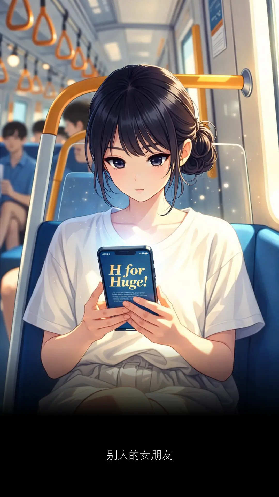
一名年轻女子拿着手机阅读着小说。
那字体放得好大。
大概有 ABCDEFG ... 哇，是 H 啊!
H for Huge!
屏幕亮度足以照亮整个天堂。
我在另一车厢都能看到她手机里写些什么：
再看，再看我就戳爆你的眼睛。
我立刻转移视线，避开丘比特之箭。
不然，被爱情盯上，就麻烦了。
孩子要男，还是要女？我要女儿！
女儿取什么名字？晶晶。
现在坏人很多，这名字可以闪开那些臭男人。
一闪一闪颜晶晶，满天都是小星星。
打算生几个？一个、两个、三个 ...
我的手指不够用，你的手指也借来算一下。
老婆和妈妈掉进水里，先救谁？
问得好，先把你丢进水里当作救生圈。
那些找到另一半的，不外都是瞎了眼。
有些瞎得早，有些瞎得刚刚好，有些瞎了才知道 ...
世上没有早知道，世上只有安华好。
每一节车厢，都是一段关于爱与不爱的预告。
我不认识你，你叫什么名字？
电话打错了，却接通了心底。
心底总在怀疑，
那些在轻快铁里听耳机、打电话的人。
听得清楚么？
还是，不是每样东西都要清清楚楚。
反而如果模模糊糊 ...
就像文章来到了最后，也许还没最后。
但已经是结尾了。
总以为人生需要完整交代。
但事实真是如此么？
如果一场意外先到 ...
我在人海中找到一朵浪花。
你用最残忍的方法，对我回答。
人生从来就没有一个标准答案。
曾经以为的答案，
它也一直在寻找自己的答案。
车门打开，她下车了，我再也见不到她。
没有告别。没有对视。
甚至没有确认她是否真实存在过。
美丽、短暂、抓不住。
你知道那是什么感觉么？
每个人都坐过地铁。
每个人都见过一个再也不会见到的人。
那不是爱情。
那是一种比爱情更轻、更抓不住的东西。
她的出现，让文字有了故事。
周杰伦需要几行字形容她是谁。
我一行就可以了：别人的女朋友。
秋刀鱼的思维，猫跟你都不了解。
就是这感觉，歌词听不清楚的感觉。
有时感觉，比答案更真实。
因为答案会变，感觉不会。
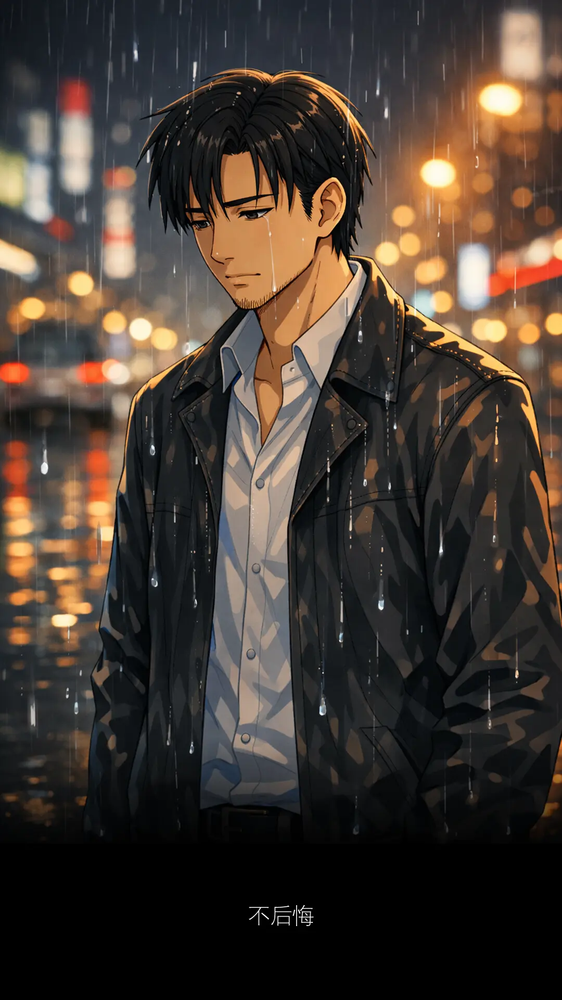
周六睁开眼睛。
先去扫地，扫地是暖身。
过后抹地，抹地是热身。
然后洗衣，洗衣是为了看洗衣机会不会洗衣。
再来就是炒米粉，民以食为天。
炒完米粉，去晾衣、晒床单。
晒完以后，哇晒！
时钟刚好九点半。
快点打开 TV2 看七龙珠。
但是太久没开电视机，已经不懂得怎么开。
七龙珠是好多年前的回忆。
回忆过去，痛苦的相思忘不了。
关于回忆，你会记得不好的比较多？
还是美好的比较多？
梁文音说：记忆有限，所以它会淘汰坏的。
然后她就哭了，哭过就好了。
什么嘛，一大早就哭。
每个人都有自己的故事。
你不是故事里的主角，自然就不会明白。
在我年少的时候，身边的人说不可以流泪。
你身边的人也要看是谁。
他们难道自己也不哭么？
他们静静关在黑暗的房间里，
一个人哭泣又怎么会让你知道。
在我成熟了以后，对镜子说我不可以后悔。
家里的镜子什么时候生满了灰尘。
手指还可以在镜片上写：不后悔。
从前有那三个字，天天讲你知。
虽然无新意，但有意思。
小时候长大的愿望就是弄小孩哭。
因为只有长大了，愿望才能实现。
小时候的时候还小，
所以唯有时间才可以实践我的愿望。
日夜飞驰，终于长大了。
走到一个爱哭的小孩面前，对牛弹琴。
小孩不知我在唱什么。
傻孩子，哭过就好了，伤都会好的。
就算下雨也是一种美，不如好好把握这个机会 ...
什么鬼，一大早，又是周末。
不哭好么？我们说好不哭的。
要哭的话，我陪你，一起哭。
小孩惊呆，反而不哭了。
突然开口：Gor，你哭什么？
小孩有所不知，等下哥还要继续洗厕所。
要知道，洗厕所是一种喜悦。
哥现在只不过是喜极而泣。
别迷恋哥，哥只是传说
苦瓜的好朋友是芽菜。
这是我第二次见阿菜的女儿。
第一次见面，是在农历新年前。
我对她印象深刻。
她嘴里含着奶嘴，双手合十。
见到自己好像见到神仙，拜个年好像拜个祖先。
忘了对她说，农历新年，双手抱拳。
清明时节，才是双手合十。
姿势很重要，不然容易闪到腰。
抱拳红包拿十块，合十百万烧给你。
两个都没有错，都是祈求平安，都是想要发财。
神明保佑，财神爷保佑，皆大欢喜。
最重要开开心心。
开心的日子，地球转得特别快。
地球自转一圈是一天。
后来，地球转了两个多月。
我们又再相见。
这一次，女大十八变，她气质一点都没变。
眼神还是那么坚定，有自信。
当她出现，桌面上的玫瑰瞬间黯然失色。
她本身就是一道光，自带光环。
照耀着在座的每一位，给他们带来满满正能量。
等所有人都到齐，她手上拿着笔记本，走进会议室。
不浪费时间，切入正题，主持大局。
她对自己的公司业务、各个部门、操作细节，了如指掌。
虽然忙碌，头脑依然保持清醒、当机立断、一针见血。
知道要做什么，什么要先做，该如何去做，什么不该做。
每一道难题，只要抛在她面前，好像都有了解决方案。
员工听了她所说的，仿佛有了眉目，大概也知道下一步该怎么做。
年龄比她大的、比她小的，个个都带着欣赏的眼神，聆听她说话。
她还会喃喃自语：
现在十二点二十分了，要继续也不是，不继续也不是。
她的员工大老远从 Kuala Lipis 下来 KL 开会。
虽然她想尽快讨论完所有课题，早点结束整个会议，但还是妥协了。
最后还是让大家先去 lunch.
她不逞强，知道什么时候该停止或是继续。
她年纪虽轻，管理能力却如此稳，经验也惊艳到我。
我注意到她的手机外壳，有个小叮当图案。
那么有能力的女人，没想到被小叮当征服。
听她说话，我可以一直听下去。
最怕，空气突然安静。
最怕，她突然点我的名。
最怕就是，那个时候我的心不在焉。
因为已经透过小叮当的任意门，逃出那一间会议室。
这样的女人，哪里找？
不用找，她就在眼前。
但是为什么，就算在眼前，我还是想逃。
可能她脑筋转得太快，仓鼠都承认，输得心服口服。
同事说，找老婆要找这种。
聪明伶俐，精明能干。
可是这种，以后就不能乱来。
心里还在想着要怎么乱，她已经知道我的打算。
算一算，不用算了，她已经知道答案。
我的数学还是体育老师教的，不好玩。
爱有很多种，有好有坏。
或许，佩服，不能当作是一种爱。
如果有一天，你遇见阿菜的女儿。
你会在她身上，学到好多东西。
尤其在公关方面，如何与员工，建设性的沟通。
她的应变能力，我再怎么形容都有差距。
但是此刻，脑海出现一个人。
Karoline Leavitt 卡罗琳•莱维特。
她是现任白宫新闻女秘书。
九七年出生，今年才二十八！
口齿伶俐、能言善辩、对答如流。
一个人的成熟，完全与年龄无关。
这女人，气势超强，讲话又快又狠。
面对记者高难度提问，更是见招拆招。
她就是天生热爱这份充满挑战的工作。
唯一的差别，阿菜的女儿比较温柔。
如果有一天，你有幸遇见阿菜的女儿。
她开口第一句，你就知道她是阿菜的女儿。
没有阿菜，哪有阿菜的女儿？
当苦瓜遇见芽菜，那便是一道绝世佳肴。
人家叫我来开会，我是真的在开会。
不要说我只是在看阿菜的女儿。
我还喜欢听阿虎的歌。
嘿，你生日快到了。二五女，生日快乐。